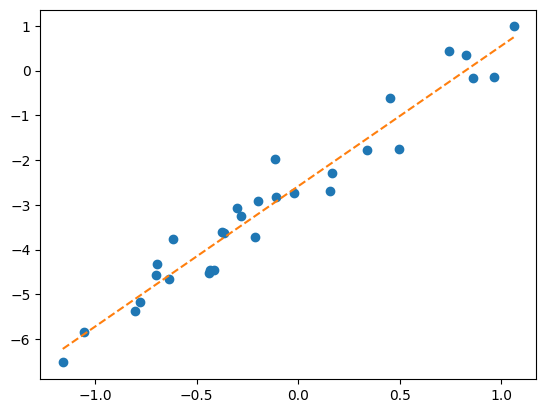

import torch
import matplotlib.pyplot as plt Quiz-6 (2026.03.25) // 범위: ~03wk

1. 경사하강법
아래의 함수를 고려하자.
\[f(x)=x^2+ \frac{x^2}{x^2+1}\]
이 함수를 최소화하는 값 \(x_{sol}\)을 구하고자 한다.
함수의 개형을 그려보고 경사하강법을 진행할 수 있는지 판단하라. 경사하강법을 진행할 수 있다면 x_sol=0.5 에서 경사하강법을 2회 진행하고 아래의 표를 완성하라. (이때 \(\alpha=0.1\) 로 설정하고 \(f'(x_{sol})\)은 적당한 정확도로 근사계산 할 것)
| 횟수 | \(x_{sol}\) (update 전) | \(f'(x_{sol})\) | \(x_{sol}\) (update 후) |
|---|---|---|---|
| 1 | 0.5 | ?? | ?? |
| 2 | ?? | ?? | ?? |
답안제출양식: 그래프개형 그린 뒤 경사하강법 사용가능여부를 판단하고 경사하강법이 가능하다면 위의 표를 채워서 제출 // 코드는 제시할 필요 없음
정답 보기
def f(x):
return x**2 + x**2/(x**2+1)
x = torch.linspace(-5,5,1000)
# plt.plot(x,f(x)) # -- 경사하강법적용가능x_sol = 0.5
alpha = 0.1 print(x_sol) # 업데이트전
slope = (f(x_sol+0.0001)-f(x_sol))/0.0001
print(slope) # 기울기
x_sol = x_sol - alpha * slope
print(x_sol) # 업데이트후 0.5
1.640112793856452
0.3359887206143548print(x_sol) # 업데이트전
slope = (f(x_sol+0.0001)-f(x_sol))/0.0001
print(slope) # 기울기
x_sol = x_sol - alpha * slope
print(x_sol) # 업데이트후0.3359887206143548
1.214690004170682
0.21451972019728662. 회귀분석
아래의 자료를 관측하였다고 하자.
x = torch.tensor([
-1.1585, -1.0528, -0.8023, -0.7788, -0.7018, -0.6923,
-0.6371, -0.6173, -0.4399, -0.4356, -0.4143, -0.3761,
-0.3639, -0.3006, -0.2797, -0.2123, -0.1962, -0.1117,
-0.1084, -0.0215, 0.1594, 0.1654, 0.3392, 0.4504,
0.4978, 0.7436, 0.8244, 0.8587, 0.9635, 1.0614
])y = torch.tensor([
-6.5200, -5.8359, -5.3639, -5.1654, -4.5664, -4.3141,
-4.6552, -3.7561, -4.5129, -4.4500, -4.4445, -3.6102,
-3.6236, -3.0639, -3.2406, -3.7088, -2.9196, -1.9855,
-2.8198, -2.7340, -2.6920, -2.2963, -1.7646, -0.6208,
-1.7411, 0.4475, 0.3451, -0.1648, -0.1344, 0.9861
])강의노트에서 나온 방법을 활용하여 \((x_i,y_i)\)를 적당히 잘 관통하는 추세선을 찾아라.
답안제출양식: \(y_i = ?? + ?? x_i\) 에서 ?? 자리만 채워서 제출. // 그래프개형, 경사하강법 사용가능여부 판단 여부 작성하여 제출할 필요없음. 코드작성하여 제출할 필요 없음.
정답 보기
b0=0
b1=0
alpha= 0.001
def l(b0,b1):
return torch.sum((y-(b0+b1*x))**2)
for dummy in range(1000):
b0_grad = (l(b0+0.0001,b1) - l(b0,b1))/0.0001
b1_grad = (l(b0,b1+0.0001) - l(b0,b1))/0.0001
b0 = b0 - alpha * b0_grad
b1 = b1 - alpha * b1_grad
print(b0,b1)tensor(-2.5841) tensor(3.1360)plt.plot(x,y,'o')
plt.plot(x,-2.5841 + 3.1360*x,'--')
3. 경사하강법 & 회귀분석 이해도 점검 (이지선다)
답안제출양식: 답만써서 내면 됩니다.
[문제 1] 1차원 경사하강법의 업데이트 수식 \(x_{sol} \leftarrow x_{sol} - \alpha \times f'(x_{sol})\)에서 \(f'(x_{sol})\)의 부호가 양수일 때, \(x_{sol}\)은 어느 방향으로 이동하는가?
① 오른쪽(증가 방향)
② 왼쪽(감소 방향)
정답 보기
답: ②
[문제 2] 경사하강법에서 점이 최솟값에 가까워질수록 기울기의 절대값은?
① 커진다
② 작아진다
정답 보기
답: ②
[문제 3] 학습률 \(\alpha\)의 값에 따른 현상으로 올바르지 않은 것은? – 문제오류
① alpha가 작을수록 천천히 최소값으로 수렴한다
② alpha가 커지면 항상 발산한다
[문제 4] \(f(x) = \frac{1}{4}(x-2)^2\)의 최솟값을 찾기 위해 \(x_{sol} = 2.24\)에서 시작했을 때, \(f(x_{sol}), f(x_{sol}+0.1), f(x_{sol}-0.1)\)을 비교하였다. 다음 업데이트에서 \(x_{sol} - 0.1\) (왼쪽으로 이동)해야 하는 이유는?
① 최솟값이 2이기 때문에
② 세 값 중 \(f(x_{sol}-0.1)\)이 가장 작기 때문에
정답 보기
답: ②
[문제 5] 아래의 코드에 대한 비판으로 slope = (1/2)*(x_sol-2)를 직접 치는 것이 불가능할 수도 있다고 언급하였다. 그 이유는?
alpha = 1.00
x_sol = 2.23
for dummy in range(30):
slope = (1/2)*(x_sol-2) # f'(x) = 1/2*(x-2)
x_sol = x_sol - alpha*slope① \(f'(x)\)의 공식을 모를 수도 있기 때문
② 컴퓨터가 분수 계산을 못하기 때문
정답 보기
답: ①
[문제 6] 미분 공식을 모를 때 미분계수 \(f'(x_{sol})\)을 근사하는 방법은?
① \(\frac{f(x_{sol}+h)-f(x_{sol})}{h}\)를 이용
② \(f(x_{sol}+h) - f(x_{sol})\)를 이용
정답 보기
답: ①
[문제 7] 2차원 경사하강법에서 그래디언트 \(\nabla f(x_{sol}, y_{sol})\)는 무엇을 의미하는가?
① \(\lim_{h\to 0}\frac{f(x_{sol}+h, y_{sol})-f(x_{sol}, y_{sol})}{h}\)를 첫 번째 원소로, \(\lim_{h\to 0}\frac{f(x_{sol}, y_{sol}+h)-f(x_{sol}, y_{sol})}{h}\)를 두 번째 원소로 하는 벡터
② 함수 \(f\)가 최댓값을 갖는 점의 좌표를 나타내는 벡터
정답 보기
답: ①
[문제 8] 아래의 알고리즘에 대한 설명으로 올바른 것은?
for dummy in range(5):
x_grad = (f(x_sol+0.01, y_sol) - f(x_sol,y_sol))/0.01
x_sol = x_sol - alpha * x_grad
y_grad = (f(x_sol, y_sol+0.01) - f(x_sol,y_sol))/0.01
y_sol = y_sol - alpha * y_grad① \(x\)와 \(y\)를 동시에 업데이트하므로 경사하강법이다
② \(x\)를 먼저 업데이트한 후 변경된 \(x\) 값을 이용하여 \(y\)를 업데이트하므로 경사하강법이 아니다
정답 보기
답: ②
[문제 9] 강의노트에서 2차원 최적화를 위한 두 알고리즘을 비교했다. 알고리즘1은 \((x_{sol}, y_{sol})\) 주변 9개 점을 모두 조사하고, 알고리즘2는 \(x\)와 \(y\) 축 방향으로만 조사한다. 알고리즘2가 더 실용적인 이유는?
① 알고리즘2가 정확도가 더 높기 때문
② 알고리즘1은 차원이 높아질수록 조사해야 할 점의 개수가 기하급수적으로 증가하기 때문
정답 보기
답: ②
[문제 10] 강의노트 # 3. 경사하강법 > ## B. 2차원 > 고차원일 경우?에 제시된 아래 표를 참고하라.
| 차원 \(d\) | 알고리즘1 | 알고리즘2 |
|---|---|---|
| 2 | 9 | 5 |
| 3 | 27 | 7 |
| … | … | … |
| 10 | 59049 | 21 |
차원 \(d=5\)일 때, 알고리즘1과 알고리즘2의 계산량은?
① 알고리즘1: 11개, 알고리즘2: 243개
② 알고리즘1: 243개, 알고리즘2: 11개
정답 보기
답: ②
[문제 16] 회귀분석에서 손실함수(loss function)로 사용되는 SSE의 수식은?
① \(\sum_{i=1}^{n}|y_i - (\beta_0 + \beta_1 x_i)|\)
② \(\sum_{i=1}^{n}(y_i - (\beta_0 + \beta_1 x_i))^2\)
정답 보기
답: ②
[문제 12] 아이스아메리카노 예제에서 박혜원씨가 생각하는 “본질을 꿰뚫어 본다”는 것의 의미는?
① 모든 관측치를 정확히 통과하는 곡선을 찾는다
② \((x_i, y_i)\)를 적당히 잘 관통하는 추세선을 찾는다
정답 보기
답: ②
[문제 17] 회귀분석에서 loss가 작다는 것은 무엇을 의미하는가?
① 대체로 \(y_i \approx \beta_0 + \beta_1 x_i\)가 성립한다
② 대체로 \(y_i\)와 \(\beta_0 + \beta_1 x_i\)의 차이가 크다
정답 보기
답: ①
[문제 18] 회귀분석의 목표는 무엇인가?
① 손실함수를 최대화하는 \(\beta_0, \beta_1\)을 찾는다
② 손실함수를 최소화하는 \(\beta_0, \beta_1\)을 찾는다
정답 보기
답: ②
[문제 11] 강의노트에서 박혜원씨가 “이 세상이 시뮬레이션 아니야?”라고 의심한 이유는?
① 관측한 데이터가 \(\text{sales}_i = \beta_0 + \beta_1 \text{temp}_{i} + \epsilon_i\) 모형에서 나온 것 같다는 느낌 때문
② 모든 점이 정확히 직선 위에 있기 때문
정답 보기
답: ①
[문제 15] 강의노트에서 박혜원씨는 시도2 \([\beta_0, \beta_1] = [2.5, 3.5]\)와 시도3 \([\beta_0, \beta_1] = [2.3, 3.5]\) 중 어느 것이 더 좋은지 판단하기 어려웠다. 이를 해결하기 위해 도입한 것은?
① 더 많은 데이터를 수집한다
② loss의 개념을 도입하여 “적당함”을 수식화한다
정답 보기
답: ②
[문제 14] 강의노트에서 박혜원씨가 “본질을 꿰뚫어 본다”는 것은 수식으로 어떻게 표현되는가?
① 최대한 \(y_i = \beta_0 + \beta_1 x_i\)를 만족하도록 \(\beta_0, \beta_1\)을 선택하는 것
② 최대한 \(y_i \approx \beta_0 + \beta_1 x_i\)를 만족하도록 \(\beta_0, \beta_1\)을 선택하는 것
정답 보기
답: ②
[문제 13] 박혜원씨가 생각하기에, 관측한 데이터에서 점들이 정확한 직선으로 보이지 않는 이유는?
① 측정 도구가 잘못되었기 때문
② 각 관측치에 장난질(\(\epsilon_i\))이 섞여서 본질을 흐리고 있기 때문
정답 보기
답: ②
[문제 19] 회귀분석에서 손실함수 \(loss = \sum_{i=1}^{n}(y_i - (\beta_0 + \beta_1 x_i))^2\)는 \(\beta_0, \beta_1\)의 함수로 볼 수 있다. 이것이 의미하는 것은?
① \(\beta_0, \beta_1\) 값을 입력으로 주면 하나의 loss 값이 출력된다
② \(x_i, y_i\) 값을 입력으로 주면 하나의 loss 값이 출력된다
정답 보기
답: ①
[문제 20] 회귀분석에서 최적의 \(\beta_0, \beta_1\)을 찾는 문제를 경사하강법으로 풀 수 있는 이유는?
① 회귀분석 문제를 아래로 볼록한 손실함수 \(l(\beta_0, \beta_1)\)을 최소화하는 최적화 문제로 바꿀 수 있기 때문
② 회귀분석은 항상 \(\beta_0 = 0, \beta_1 = 1\)이 답이기 때문
정답 보기
답: ①